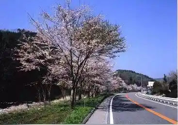
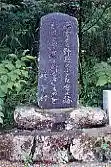

Takane Yama Tozanguchi
Hiraya, Nagano · 0265-48-2211 · Official / source link
Hiraya Highlands
Hiraya, Nagano · 0265-48-2100 · Official / source link
Himawari no Yu Shuhen no Himawari
Hiraya, Nagano · 0265-48-2211 · Official / source link
Kokudo 153 Go Soi no Sakura Namiki
Hiraya, Nagano · 0265-48-2211 · Official / source link

Hayashi Imo Village Kahi
Hiraya, Nagano · 0265-48-2211 · Official / source link

Museum Yume Hiraya
Hiraya, Nagano · 0265-48-2211 · Official / source link
caf sue is fine
Hiraya, Nagano · 090-3443-2682 · Official / source link
COUNTRY BREAD Guranma
Hiraya, Nagano · 0265-48-2306 · Official / source link
(Kabu) Shinshu Hiraya Onsen Himawari Baths
Hiraya, Nagano · 0265-48-2911 · Official / source link
Matsu no Ya
Hiraya, Nagano · 0265-48-1131 · Official / source link